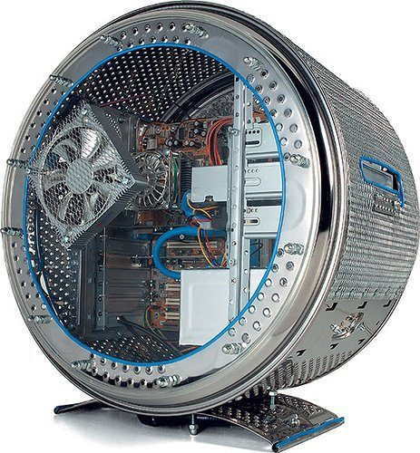

<DOCTPYE !html>
  <!--Inspired by https://www.tomshardware.fr/40-boitiers-insolites/1/-->
  <html>
  <head>
    <meta charset="utf-8">
    <title>Les PC les plus insolites - Les recyclés - Deuxième PC</title>
    <style type="text/css">
    body {
    color:rgb(169,169,169);
    background-color:rgb(51,51,51);
    background-image:url(img/background.png);
    background-repeat:no-repeat;
    background-position:50% 0%;
    background-attachment: fixed;
    }

    h{text-align:center;
      font-family:"impact";
    }
    p1{font-family:"impact";}
    a:hover{color:purple; text-decoration:underline; }
    </style>
  </head>


    <body>
  <center>
    <hr>
    
    <hr>
    <br><br><br>
    
    

    <p1>Le deuxième pc :</p1>
    <br><br>
    
        <br><br> 
    <p2> Le recyclage est une des principale préocupation de l'Homme du XXI ème siécle... <br>Mais la on a atteint la limite du concept.</p>
<br>

    <a href="../index.html">·Page d'accueil·</a>

  </center>
 </body>
</html>